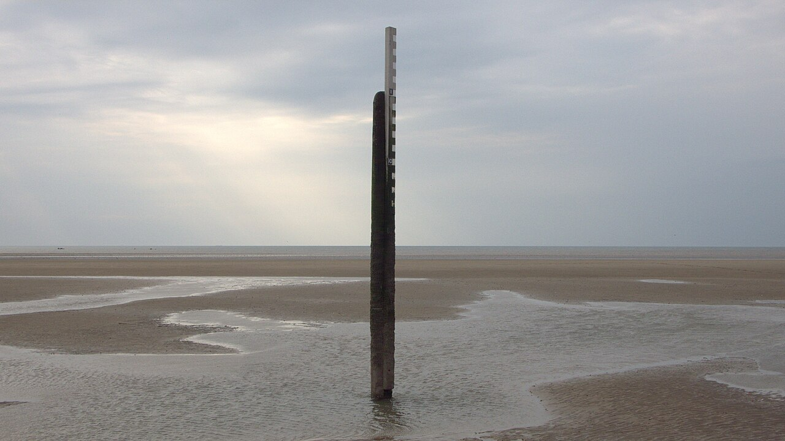

Every tide of 2027, port by port.
Tide and daylight for 214 UK ports, printed or as CSV.
- Ports
- 214
- Edition
- 2027
- Ships
- 2 Dec
A day of tide and daylight.
Two highs, two lows, and the light between them. Drag through the year.
An example drawn from a simple model of the tide and the sun to show the parts of a page, not a forecast.
The year, springs and neaps.
Each mark is a day. The taller it stands, the bigger that day’s range.


For sailors, swimmers and harbour masters: anyone who plans by the water.
The book, or the data.
Both cover 214 ports for every day of 2027. Shipping from 2 December.
port,date,time,height_m,event
falmouth,2027-01-01,03:12,4.9,high
falmouth,2027-01-01,09:28,0.8,low
falmouth,2027-01-01,15:36,4.7,high
falmouth,2027-01-01,21:51,0.9,low
falmouth,2027-01-01,08:22,,sunrise
falmouth,2027-01-01,16:14,,sunset
… 214 ports, 365 daysThe rows shown are an example of the format.